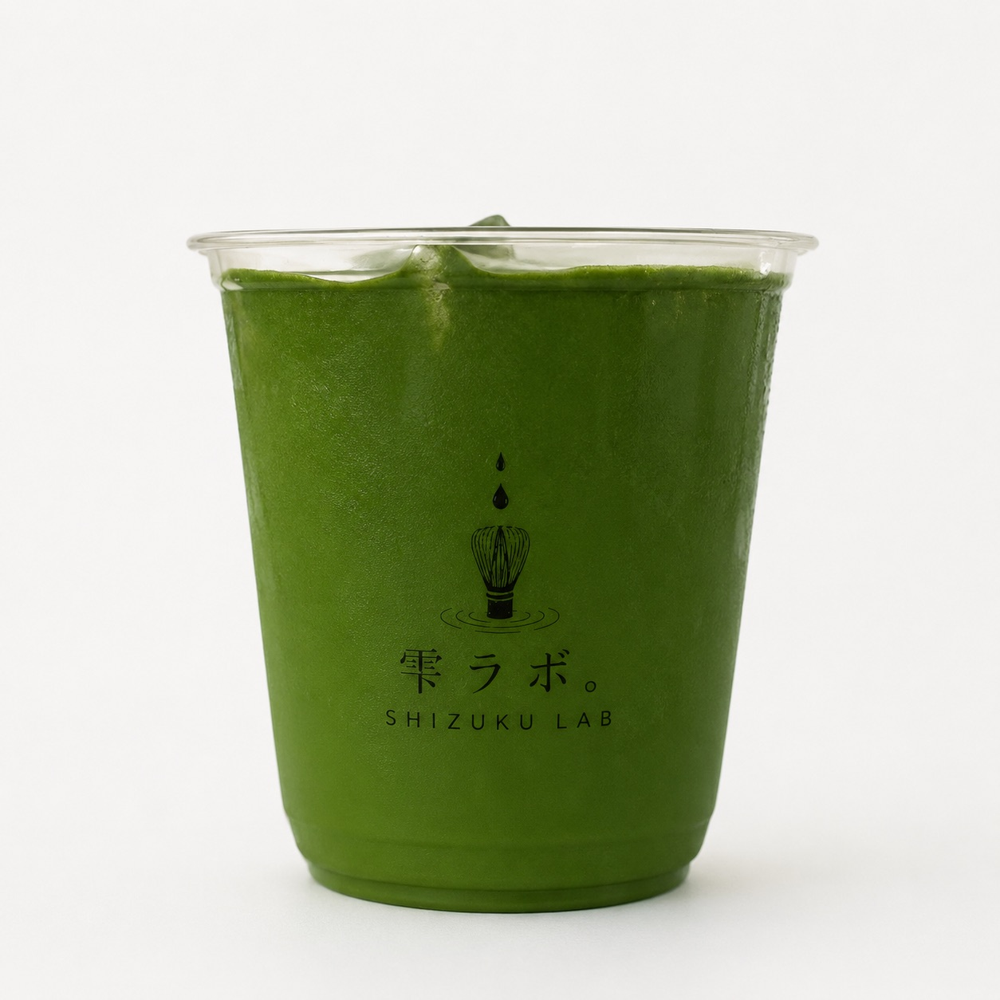
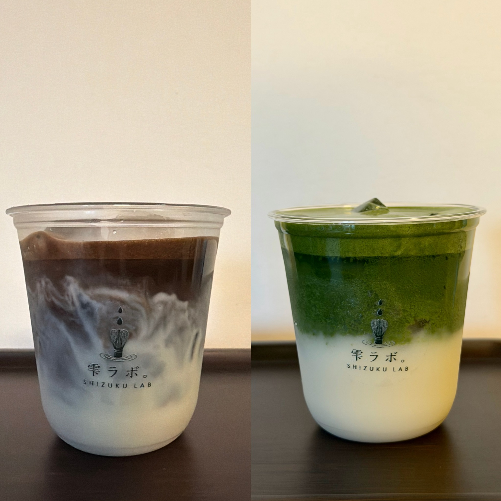
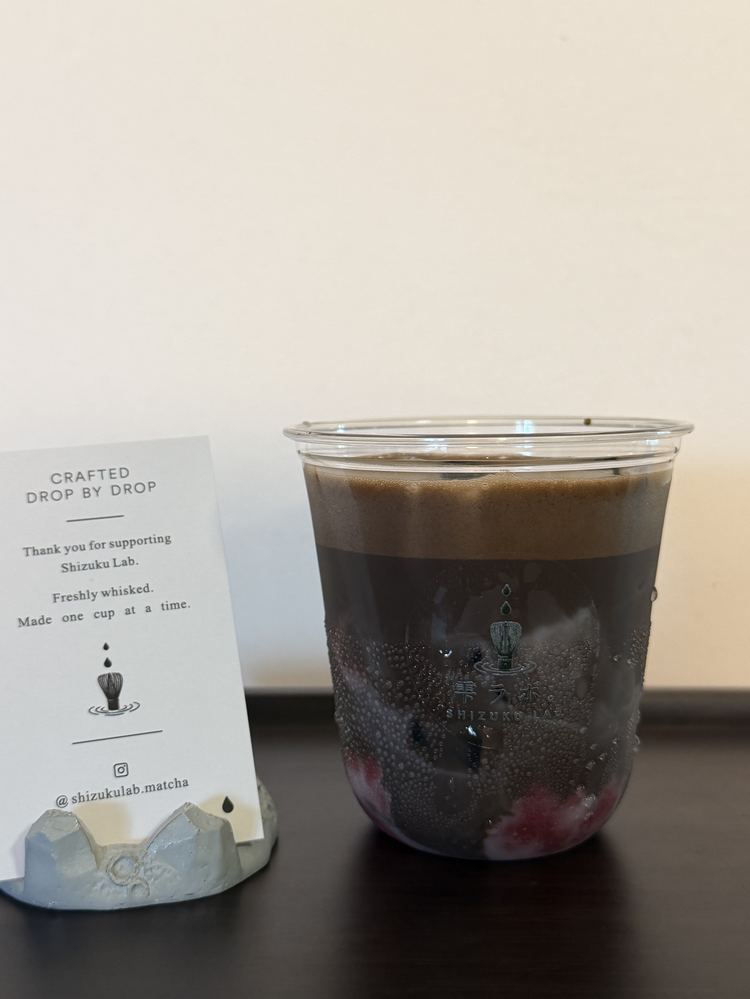
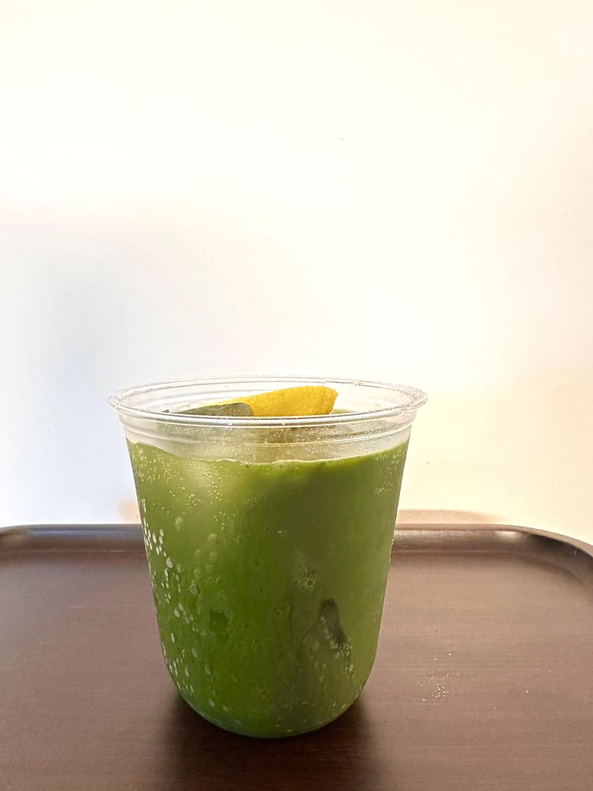
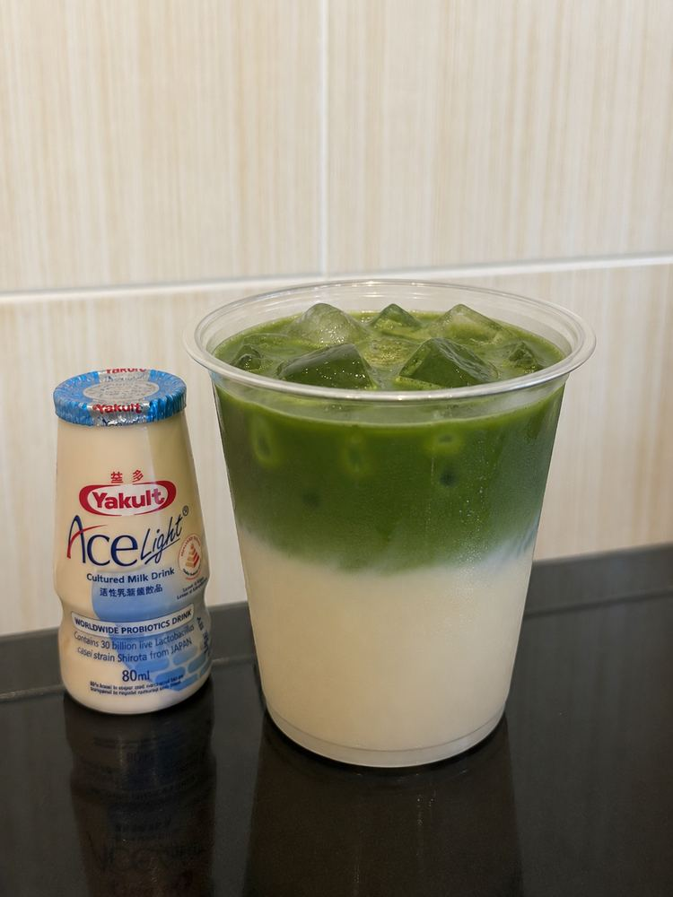

Freshly whisked
Each cup begins only after your order is received.

TOA PAYOH · SINGAPORE
Freshly whisked Japanese matcha, prepared one cup at a time.
01 · PHILOSOPHY

OUR STORY
Shizuku Lab is a home-based matcha studio in Toa Payoh. It started from a simple wish: to make good matcha feel personal, approachable and cared for.
Every drink is prepared after an order is placed. No rush, no shortcuts—just carefully selected tea, a smooth whisk and a little more attention.
02 · OUR MATCHA
Our matcha is carefully selected from Yame, Fukuoka, Japan, for its vibrant colour, balanced character and smooth finish. Every cup is whisked fresh only after an order is placed, so you experience matcha at its best.
03 · WHY SHIZUKU LAB
Each cup begins only after your order is received.
A creamy pairing selected to support—not hide—the tea.
A focused menu gives us more time for every cup.
From the whisk to the handover, nothing is treated as an afterthought.
04 · THE MATCHA LIBRARY
A quiet collection of short guides for anyone curious about how matcha is grown, picked, milled and described.
06 · FROM THE LAB
A quiet place for new drinks, matcha notes and moments behind the whisk.

AUGUST 2026Roasted tea and strawberry, layered one cup at a time.

FROM THE LABMatcha, citrus and sparkling refreshment for warmer days.

MATCHA NOTESFinding the point where familiar sweetness still lets matcha speak.
07 · CONTACT
Thank you for slowing down with us.
Reserve your cup